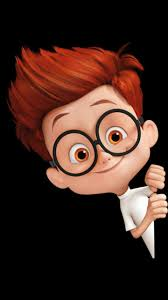

Animation
Animation is a method of photographing successive drawings, models, or even puppets, to create an illusion of movement in a sequence. Because our eyes can only retain an image for approx. 1/10 of a second, when multiple images appear in fast succession, the brain blends them into a single moving image. In traditional animation, pictures are drawn or painted on transparent celluloid sheets to be photographed. Early cartoons are examples of this, but today, most animated movies are made with computer-generated imagery or CGI.
types of animations
- Traditional Animation:This is one of the oldest forms of animation in film. It’s sometimes called cel animation. As mentioned above, in traditional animation, objects are drawn on celluloid transparent paper. In order to create the animated sequence, the animator must draw every frame. It’s the same mechanism as a flipbook, just on a grander scale.

- 2D Animation:2D animation can fall under traditional animation like most early Disney movies — Pinocchio, Beauty and the Beast, etc. But there is something called Vector-based animation that can be 2D without being traditional.
With Vector-based, the motion here can be controlled by vectors rather than pixels. So, what the heck does that mean?
Images with familiar formats like JPG, GIF, BMP, are pixel images. These images cannot be enlarged or shrunk without affecting image quality. Vector graphics don’t need to worry about resolution. Vectors are characterized by pathways with various start and end points, lines connecting these points to build the graphic. Shapes can be created to form a character or other image.

- 3D Animation:Today, 3D or computer animation is the most common type. But just because computers have stepped in instead of actual drawings, it’s not necessarily easier. The computer is just another tool, and 3D animation is still a long, intense process.

- Motion Graphics:Motion Graphics are pieces are digital graphics that create the illusion of motion usually for ads, title sequences in films, but ultimately exist to communicate something to the viewer. They’re often combined with sound for multimedia projects.

- Stop Motion:Stop motion encompasses claymation, pixelation, object-motion, cutout animation, and more. But the basic mechanics are similar to the traditional style like a flipbook. However, instead of drawings, stop motion adjusts physical objects in each frame.

i prefer 3d animation because it is more twenty first century here are some of my favourotes